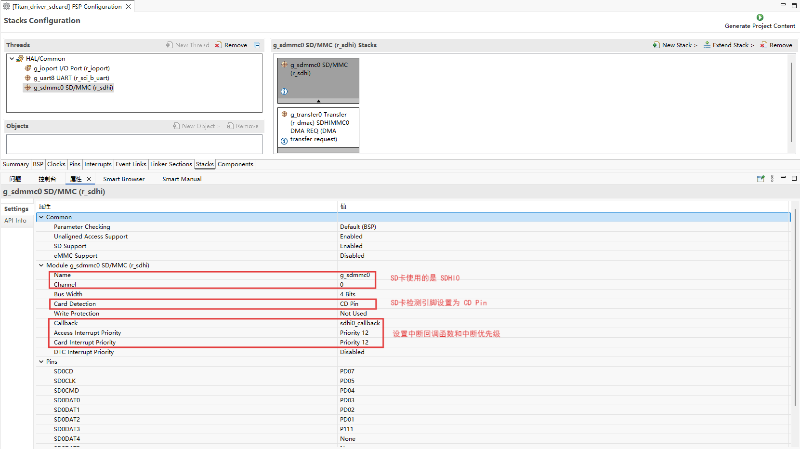
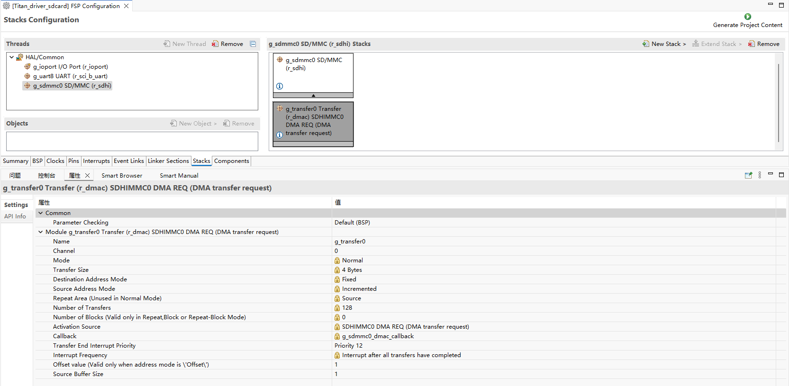
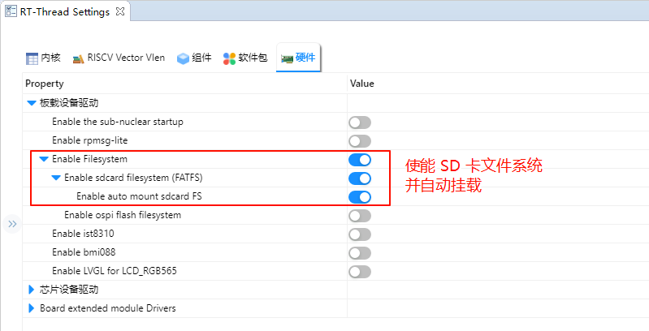
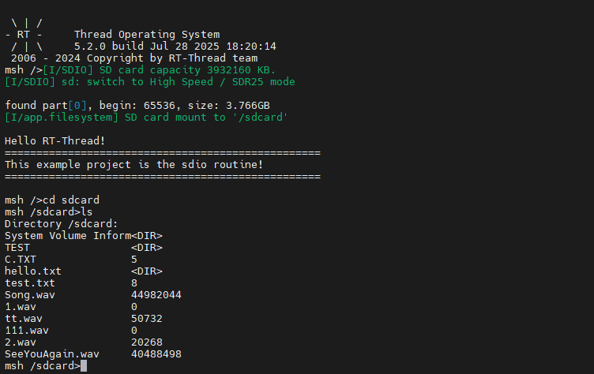

SD Card File System Usage Instructions
English|Chinese
Introduction
This routine uses the SD card in the SD card slot on the development board as the storage device for the file system, shows how to create a file system (format card) on the SD card, and mount the file system into the RT-Thread operating system.
Once the filesystem is mounted, it shows how to use the functionality provided by the filesystem to manipulate directories and files.
SD Card Introduction
1. Overview
SD Card (Secure Digital Card) is a small, portable, non-volatile storage device widely used in embedded systems, cameras, mobile phones, and data loggers.
An SD card is composed of a controller + NAND Flash memory chip and communicates with the host through a standard interface.
Key features:
Compact and lightweight, typically 32 24 2.1 mm (standard card)
Stores data using non-volatile NAND Flash
Supports hot-plugging and power-off protection
2. SD Card Types
By size
Standard SD: 32 24 mm
Mini SD: 21.5 20 mm
Micro SD (TF Card): 15 11 mm, most commonly used
By capacity
Type |
Capacity Range |
|---|---|
SDSC |
1 MB ~ 2 GB |
SDHC |
4 GB ~ 32 GB |
SDXC |
32 GB ~ 2 TB |
SDUC |
2 TB ~ 128 TB |
By speed class
Class 2/4/6/10: Minimum write speed of 2, 4, 6, 10 MB/s
UHS (Ultra High Speed): UHS-I/UHS-II/UHS-III, up to 312 MB/s
Video Speed Class (V6/V10/V30/V60/V90): Designed for HD/4K video recording
3. SD Card Interfaces
SPI Mode
Uses SPI bus (MISO, MOSI, SCK, CS)
Simple and MCU-friendly
Lower data transfer rate
SD Mode (1-bit / 4-bit)
Uses dedicated SD bus
Supports 1-bit or 4-bit data lines
Faster than SPI mode
UHS Mode
Supports high-speed data transfer
Commonly used in cameras and high-performance embedded applications
4. Working Principle
Command/Data Transfer
Host sends commands (CMD) via SD protocol
Card returns responses (R1, R2, etc.)
Data read/write in blocks of 512 bytes
Controller Management
Internal controller handles bad block management, ECC, logical-to-physical mapping
Host does not directly manage NAND Flash
Data Storage
Data is stored in NAND Flash
Supports multiple erasures with endurance (typically 100k cycles)
5. SD Card Performance
Parameter |
Description |
|---|---|
Capacity |
1 GB ~ 128 TB |
Block Size |
512 Bytes (standard) |
Interface Speed |
SPI / SD 1-bit/4-bit / UHS |
Max Speed |
25 MB/s (standard), 312 MB/s (UHS-III) |
Operating Voltage |
3.3 V (some Micro SD support 1.8 V) |
Temp Range |
-25 ~ 85 (industrial grade) |
Endurance |
10^4 ~ 10^5 erase cycles |
6. SD Card Applications
Consumer Electronics
Phones, tablets, cameras, camcorders
Embedded Systems
MCU/FPGA data storage
Logging, config file storage
Industrial Applications
Controllers, data acquisition systems
Industrial-grade SD cards for harsh environments
Audio/Video
High-speed video recording (UHS/V Class)
Automotive
Dashcams, navigation systems
RA8 Series SDHI Module Overview
The RA8 series MCU integrates a high-performance SDHI module designed for high-speed communication with SD/SDHC/SDXC cards. It supports both SPI mode and SD/SDIO mode.
1. Key Features
SD Standards Support
SD v1.x / v2.x / SDHC / SDXC
SPI mode & SD/MMC mode
High-Speed Data Transfer
Up to 50 MHz SDCLK (depending on MCU clock)
1-bit/4-bit data bus support
Auto Command & Data Transfer
DMA support to reduce CPU load
Auto command sequence generation (CMD0CMD59)
Error Detection
CRC7 for commands, CRC16 for data
Timeout & response error detection
Interrupt Support
Card insert/remove interrupt
Command complete interrupt
Data transfer complete interrupt
Error interrupt
2. SDHI Module Architecture
Command Control Unit
Sends SD commands (CMD0CMD59)
Handles responses (R1, R2, R3, R7)
Supports timeout detection and CRC check
Data Transfer Unit
Transfers data via FIFO or DMA
Block size up to 512 bytes
Supports single/multi-block transfer
Clock & Bus Control
Generates/divides SDCLK
Switches between 1-bit/4-bit modes
Configurable signal timings
Card Detect & Power Control
Detects card insertion/removal
Can control card power if supported
Interrupt/Event Controller
Command complete interrupt
Data transfer complete interrupt
Error interrupt
Card detect interrupt
3. SDHI Working Principle
Initialization
Detect card insertion
Send CMD0, CMD8 for initialization
Query card capacity & version
Command Transmission
Host sends commands
Card responds with CRC check & triggers interrupt
Data Transfer
Reads/writes via FIFO or DMA
Supports single/multi-block operations
Error Handling
Timeout, CRC, and response errors
SDHI triggers error interrupt, driver retries or recovers
Hardware Description
This example is connected to the memory through the SDIO interface, using the SD0 of the hardware, the schematic diagram is as follows:

FSP Configuration
Create stacks select r_sdhi and configure sdhi0 configuration information as follows:


RT-Thread Settings Configuration
Enable the SD card file system in the configuration.

Enable SDHI0 and set the Bus Width of SDHI0 to 1.

Example Project Description
This routine file system initialization source in ./board/ports/drv_filesystem.c
#include <rtthread.h>
#if defined(BSP_USING_FILESYSTEM)
#include <dfs_romfs.h>
#include <dfs_fs.h>
#include <dfs_file.h>
#if DFS_FILESYSTEMS_MAX < 4
#error "Please define DFS_FILESYSTEMS_MAX more than 4"
#endif
#if DFS_FILESYSTEM_TYPES_MAX < 4
#error "Please define DFS_FILESYSTEM_TYPES_MAX more than 4"
#endif
#define DBG_TAG "app.filesystem"
#define DBG_LVL DBG_INFO
#include <rtdbg.h>
#ifdef BSP_USING_FS_AUTO_MOUNT
#ifdef BSP_USING_SDCARD_FATFS
static int onboard_sdcard_mount(void)
{
if (dfs_mount("sd", "/sdcard", "elm", 0, 0) == RT_EOK)
{
LOG_I("SD card mount to '/sdcard'");
}
else
{
LOG_E("SD card mount to '/sdcard' failed!");
rt_pin_write(0x000D, PIN_LOW);
}
return RT_EOK;
}
#endif /* BSP_USING_SDCARD_FATFS */
#endif /* BSP_USING_FS_AUTO_MOUNT */
#ifdef BSP_USING_FLASH_FS_AUTO_MOUNT
#ifdef BSP_USING_FLASH_FATFS
#define FS_PARTITION_NAME "filesystem"
static int onboard_fal_mount(void)
{
/* fal */
extern int fal_init(void);
extern struct rt_device* fal_mtd_nor_device_create(const char *parition_name);
fal_init ();
/* ospi flash "filesystem" */
struct rt_device *mtd_dev = fal_mtd_nor_device_create (FS_PARTITION_NAME);
if (mtd_dev == NULL)
{
LOG_E("Can't create a mtd device on '%s' partition.", FS_PARTITION_NAME);
return -RT_ERROR;
}
else
{
LOG_D("Create a mtd device on the %s partition of flash successful.", FS_PARTITION_NAME);
}
/* ospi flash "filesystem" */
if (dfs_mount (FS_PARTITION_NAME, "/fal", "lfs", 0, 0) == 0)
{
LOG_I("Filesystem initialized!");
}
else
{
dfs_mkfs ("lfs", FS_PARTITION_NAME);
if (dfs_mount ("filesystem", "/fal", "lfs", 0, 0) == 0)
{
LOG_I("Filesystem initialized!");
}
else
{
LOG_E("Failed to initialize filesystem!");
rt_pin_write(0x000D, PIN_LOW);
}
}
return RT_EOK;
}
#endif /*BSP_USING_FLASH_FATFS*/
#endif /*BSP_USING_FLASH_FS_AUTO_MOUNT*/
const struct romfs_dirent _romfs_root[] =
{
#ifdef BSP_USING_SDCARD_FATFS
{ROMFS_DIRENT_DIR, "sdcard", RT_NULL, 0},
#endif
#ifdef BSP_USING_FLASH_FATFS
{ ROMFS_DIRENT_DIR, "fal", RT_NULL, 0 },
#endif
};
const struct romfs_dirent romfs_root =
{
ROMFS_DIRENT_DIR, "/", (rt_uint8_t*) _romfs_root, sizeof(_romfs_root) / sizeof(_romfs_root[0])
};
static int filesystem_mount(void)
{
#ifdef RT_USING_DFS_ROMFS
if (dfs_mount(RT_NULL, "/", "rom", 0, &(romfs_root)) != 0)
{
LOG_E("rom mount to '/' failed!");
}
/* */
rt_thread_delay(500);
#endif
#ifdef BSP_USING_FS_AUTO_MOUNT
onboard_sdcard_mount();
#endif /* BSP_USING_FS_AUTO_MOUNT */
#ifdef BSP_USING_FLASH_FS_AUTO_MOUNT
onboard_fal_mount ();
#endif
return RT_EOK;
}
INIT_COMPONENT_EXPORT(filesystem_mount);
#endif /* defined(BSP_USING_FILESYSTEM)*/
Compilation & Download
RT-Thread Studio: In RT-Thread Studios package manager, download the Titan Board resource package, create a new project, and compile it.
After compilation, connect the development boards USB-DBG interface to the PC and download the firmware to the development board.
Run Effect
Press the reset button to restart the development board, wait for the SD to mount, and enter the file system directory of the SD card to view the files on the SD card.
